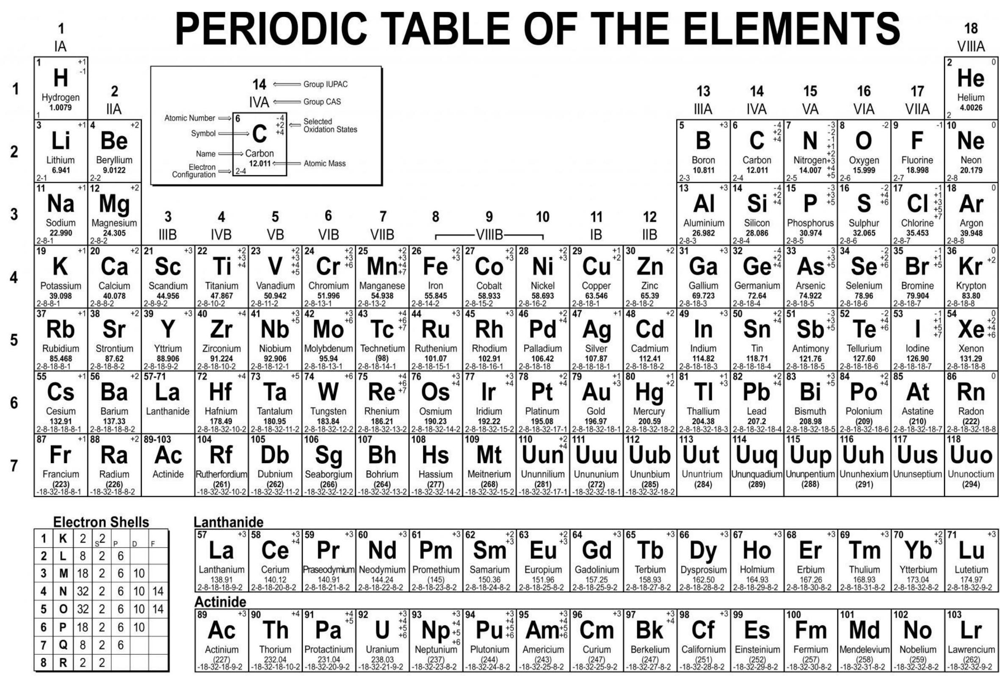
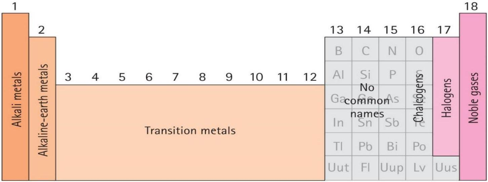

UNIT 2: PERIODIC TABLE
Unit objectives
By the end of this unit, the learner should be able to;
- Explain the trends in the periodic table
- Outline the physical and chemical properties of elements in the periodic table
2.1 INTRODUCTION TO PERIODIC PROPERTIES
Elements are presented in ascending order i.e. increasing atomic number and organized by period (row) and group (column), with the period corresponding to the principle energy level (left to right), and the group relating to the extent the subshells are filled. The periodic table consists of seven rows called periods, and 18 columns called groups or families.
2.2 Physical and chemical properties of elements
The properties of the elements within a period vary across the periodic table in predictable ways, while the elements within a group have similar properties. The properties of an atom relate directly to the number of electrons in various orbitals, and the periodic table is much like a road map among those orbitals such that chemical properties can be deduced by the position of an element on the table. The electrons in the outermost shell are especially important because they can engage in the sharing and exchange that is responsible for chemical reactions i.e. they determine the element's valence. Using periodic trends, the periodic table can help predict the properties of various elements and the relations between properties. The properties of an atom depend ultimately on the number of electrons in the various orbitals, and on the nuclear charge which determines the compactness of the orbitals.
Downloaded by Patrick Ngobiro (pngobiro@gmail.com)
Physical properties are the characteristics can be observed without changing the substance into another substance. Physical properties of matter are usually those that can be observed using our senses. The observations usually consist of some type of numerical measurement. Examples of Physical properties include Color, Freezing point, Boiling point, Melting point, Density and Smell. E.g. the melting point of water is $0^{\circ} \mathrm{C}$ (temperature at which the solid for of the element or compound is at equilibrium with the liquid form) whereas its boiling point is a $100^{\circ} \mathrm{C}$ (temperature at which the liquid form of an element or compound is at equilibrium, with the gaseous form)
Chemical properties are the characteristics that determine how it will react with other substances or change from one substance to another. Chemical properties, or characteristics, which are exhibited as one substance and then chemically transformed into another. Chemical properties are only observable during a chemical reaction. Reactions and changes to substances can be brought about by Burning, Rusting, Heating, Exploding and Tarnishing.
For purposes of our course, our concentration will be on the first 20 elements of the periodic table as highlighted in an earlier section of this unit.
2.3 CHEMICAL PROPERTIES/REACTIONS
A lithium atom has two electrons orbiting in an inner shell and only one electron orbiting in its outer shell. The outer shell is incomplete, and therefore unstable. Li atoms readily give up one electron to form positively charged, $\mathrm{Li}^{+}$ ions. These ions have the same stable electron configuration as the noble gas helium.
All Group 1 atoms can lose one electron to form positively charged ions (cations). For example, potassium atoms do this to form ions with the same electron configuration as the noble gas argon.
Group 2 atoms lose two electrons to form positively charged ions. For example, magnesium atoms form $\mathrm{Mg}^{2+}$ ions. These have the same electron configuration as the noble gas neon.
Most elements in Group 3 lose three electrons to form 3+ ions. Boron, however, shows little tendency to form ions. It obtains a noble gas structure by sharing electrons with other atoms. This is called covalent bonding. Elements in Groups 15, 16 and 17, find it easier to gain electrons than lose them. For example, oxygen atoms gain two electrons to form $\mathrm{O}^{2-}$ ions. These ions are negatively charged (anions). These have the same electron configuration as the noble gas neon.
Elements in Group 14 could lose four, or gain four electrons to achieve a noble gas structure. In fact, if they are going to form ions, Group 14 elements form positive ions. Carbon and silicon form covalent bonds. Carbon's millions of organic compounds are all based on shared electrons in covalent bonds.
Many elements can form covalent bonds depending on the circumstances. For example, the bonding in water, $\mathrm{H}_{2} \mathrm{O}$, is mainly covalent; and while chlorine is bonded to sodium ionically in sodium chloride, it bonds to carbon covalently in carbon tetrachloride.
A chemical property describes the tendency of a substance to transform into a new substance. During this transformation, atoms rearrange themselves into new configurations. For instance, we have mentioned above that atoms in group/family 1 lose an electron to form positively charged ions, cations. In conclusion, a physical change imposes a new set of conditions on the same material while a chemical change forms a new material with its own unique set of physical properties. E.g. a physical to demonstrate physical properties, water can be subjected to extremely low temperatures that it forms ice i.e. liquid to solid. To demonstrate a chemical change, hydrogen ions can combine with an oxygen ion to form an entirely new substance i.e. water.
Sample questions
3. Melting a piece of gold would be? Physical change
4. Tarnishing a piece of silver would be? Chemical change
Elements vs. Compounds
An element is a material made of only one kind of atom. E.g. pure gold is made up of only gold atoms.
A compound is a substance consisting of atoms of different elements. E.g. Sodium Chloride NaCl, Ammonia $\mathrm{NH}_{3}$ and water $\mathrm{H}_{2} \mathrm{O}$. Compounds have properties uniquely different from the elements from which they are made. A chemical formula is used to show the proportion by which elements combine to form a compound.
Downloaded by Patrick Ngobiro (pngobiro@gmail.com)
Compounds are named starting with the element farthest to the left in the periodic table and for the element to the right, a suffix -ide is added. However, some compounds have several possible combinations e.g. Carbon can react with oxygen to CO or CO$_2$. In such a situation, a prefix is added to both compounds to eliminate ambiguity i.e. carbon monoxide and carbon dioxide. Example 2, hydrogen can react with oxygen to form H$_2$O or H$_2$O$_2$ i.e. dihydrogen monoxide or dihydrogen dioxide. However in such a situation, common names are used to describe the compounds i.e. water and hydrogen peroxide.
Sample question
1. What is the name of the compound with the formula $\mathrm{CBr}_{4}$? Carbon tetrabromide